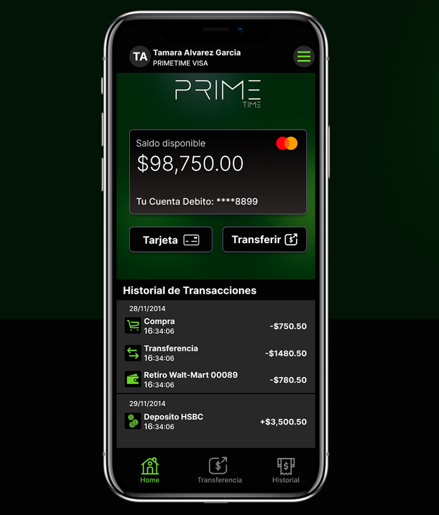
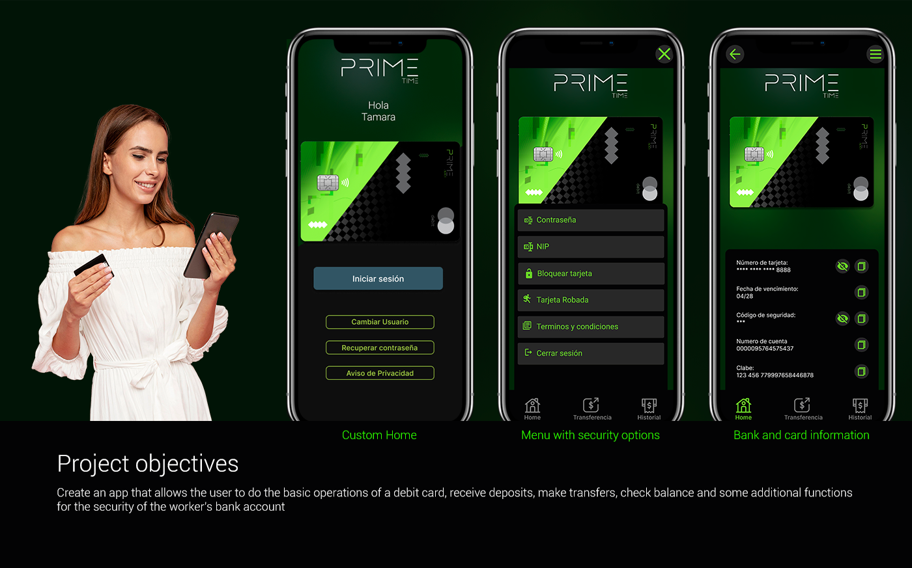
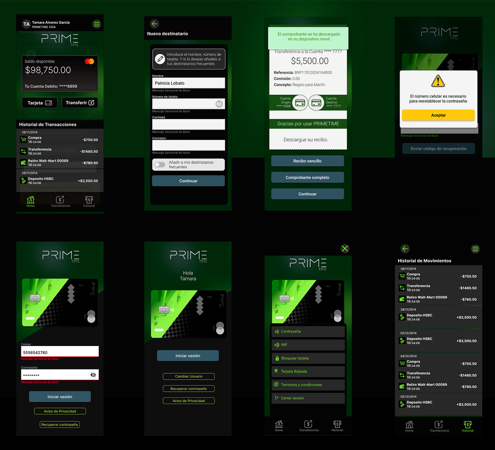
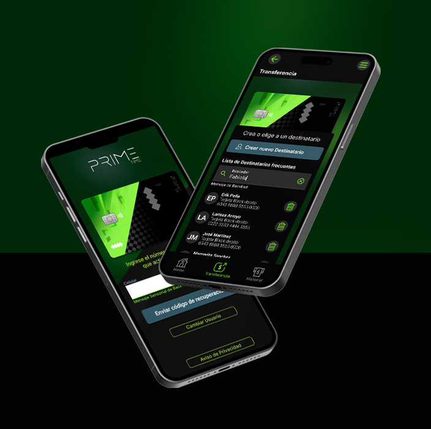

Inclusión financiera para trabajadores temporales: seguridad, simplicidad y dignidad en cada transacción
Blxck Pay es una aplicación de tarjeta de débito diseñada para trabajadores temporales de México y Latinoamérica que laboran en Estados Unidos bajo programas H-2A y H-2B. La solución permite gestionar salarios, realizar transferencias internacionales y pagar en establecimientos comerciales con seguridad y dignidad.
La empresa empleadora enfrentaba un problema crítico: la duplicación de cheques de pago. Los trabajadores cobraban doble salario utilizando copias de sus cheques, y la compañía no tenía forma de verificar ni prevenir este fraude.
Adicionalmente, los trabajadores enfrentaban discriminación en algunos comercios al pagar en efectivo, altas comisiones de Western Union, imposibilidad de abrir cuentas bancarias tradicionales y riesgo de robo al transportar efectivo.

Entendiendo a los trabajadores temporales

Trabajadores mexicanos y latinoamericanos, principalmente hombres entre 25–50 años, empleados en fábricas, mantenimiento, jardinería y construcción. Nivel de alfabetización digital básico, con experiencia limitada en aplicaciones bancarias.
Investigación con usuarios reales reveló patrones críticos:
Carlos Mendoza — Trabajador agrícola temporal, 38 años, originario de Michoacán. Trabaja 8 meses al año en Oregon bajo visa H-2A, envía $1,500–2,000 USD mensuales a su familia en México, usa smartphone Android básico con WhatsApp y Facebook. No confía en bancos tradicionales por barreras de idioma y documentación.
¿Cómo podemos crear una experiencia financiera digital segura y sencilla para trabajadores temporales con baja alfabetización digital, que elimine el fraude de nómina, reduzca costos de remesas y restaure su dignidad en transacciones comerciales?
Metodología Design Thinking en 18 meses

Características diseñadas para inclusión y seguridad

Verificación en dos pasos vía SMS
Flujo simplificado de 3 pasos: ingresar últimos 8 dígitos → recibir código por SMS → confirmar activación. Diseñado para usuarios con poca experiencia tecnológica.
Control total en la palma de tu mano
Los primeros 12 dígitos y CVV están ocultos por defecto. El usuario dispone de un boton para ocultar o mostrar los datos de la tarjeta.
Envía dinero a México con tarifas reducidas
Transferencias directas a cuentas mexicanas o retiro en puntos autorizados, con tarifas ~30% menores que Western Union y tipo de cambio competitivo.
Historial, estados de cuenta y recibos
Lista cronológica con iconos reconocibles (comida, transporte, envío), montos en USD y MXN, y filtros por fecha/tipo. Diseñado para baja alfabetización financiera.
Control personalizado con protección robusta
Cambio de NIP y contraseña con validación en tiempo real, autenticación de dos factores para cambios críticos, y recuperación segura vía SMS.
Español e inglés con cambio instantáneo
Configuración visible desde el onboarding y accesible en cualquier momento. Todo el contenido, mensajes de error disponibles en ambos idiomas.
Métricas tras 18 meses de implementación y evolución del producto
Tasa de adopción de la app
Éxito en autenticación SMS
Calificación promedio
Ahorro vs Western Union
"
Antes tenía que hacer fila dos horas en Western Union cada mes para mandar dinero a mi esposa. Ahora lo hago desde mi cama en 5 minutos, y me sobra para comprar algo para los niños.
— Carlos M., trabajador agrícola en Oregon
Usuario desde 2023
"
En el supermercado ya no me miran raro cuando pago. Con la tarjeta es como cualquiera, y además veo en el celular a dónde se fue mi dinero. Me siento más tranquilo.
— Luis R., empleado de mantenimiento en Texas
Usuario desde 2022
"
Como empleador, reducir la duplicación de cheques fue crítico para nuestra operación. La app nos dio visibilidad en tiempo real y eliminó un problema que nos costaba miles de dólares al año.
— Equipo de Nómina, Empresa Contratante
Stakeholder del proyecto
Lecciones de diseño para inclusión financiera
Por presión de tiempo desarrollamos el MVP sin un sistema de diseño formal, lo que generó inconsistencias en iteraciones posteriores. La próxima vez: definir tokens, componentes y microcopys desde la fase de descubrimiento.
Los requisitos de seguridad financiera son fundamentales. Deben integrarse en la arquitectura de información desde el primer boceto, colaborando estrechamente con el equipo de compliance.
Probar con usuarios que representan el perfil real (baja alfabetización digital, contexto en exteriores) reveló problemas que no hubiéramos detectado con testers internos.
Pequeñas decisiones de diseño tienen gran impacto en inclusión: iconos universales, lenguaje sencillo, contraste alto, modo offline. Diseñar para los usuarios con más barreras beneficia a todos.